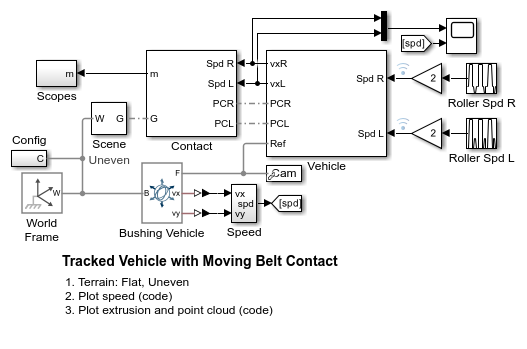
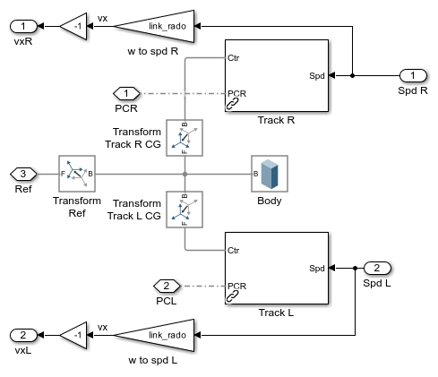
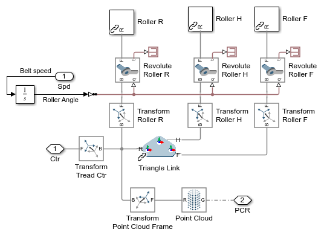
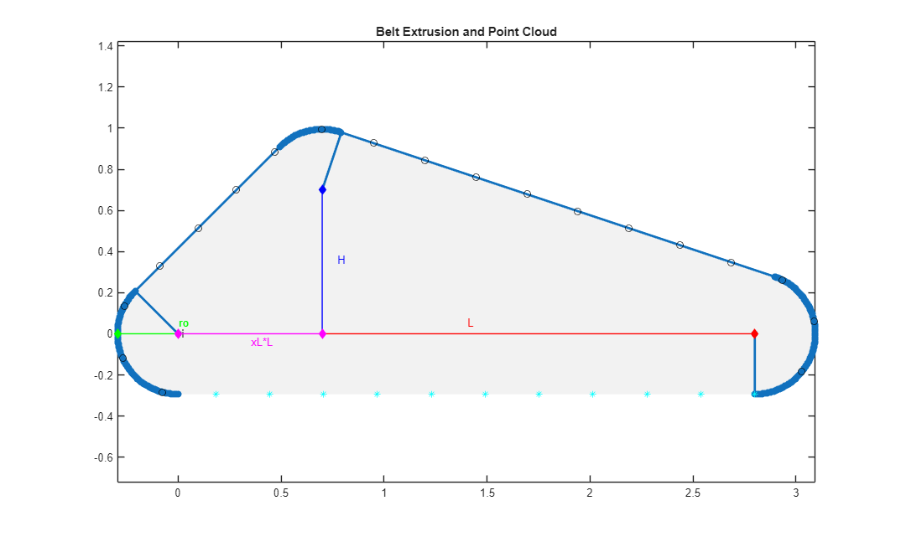
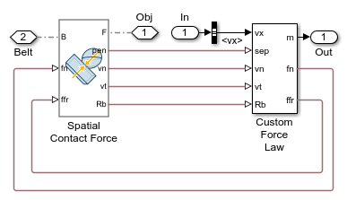
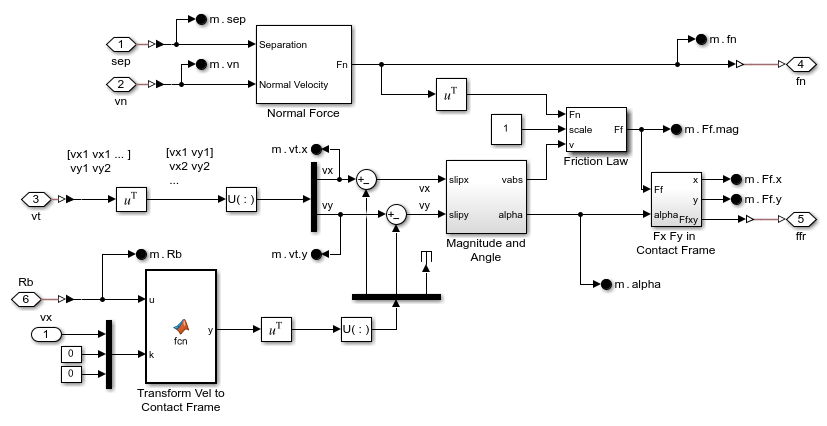
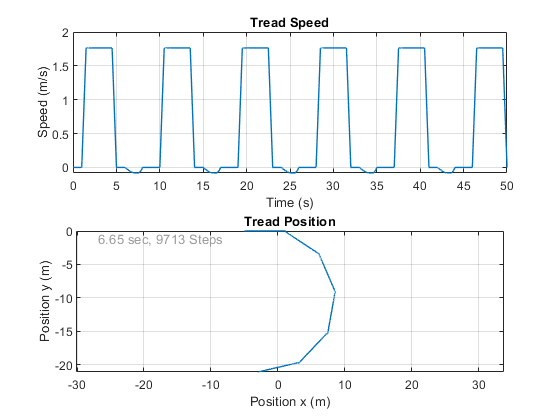
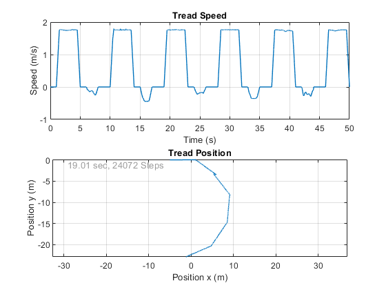

Tracked Vehicle with Belt Contact
This example models a tracked vehicle with an abstract model of the tracks that propel it across the ground. It shows how to use a custom contact force law to model the track as a conveyor belt. The surface of the track is modeled as a point cloud, enabling the belt to assume any desired shape. The model can be configured to use a flat or an uneven surface for testing.
Contents
Model
Vehicle
The vehicle is modeled with two identical tracks connected by a rigid body. The input signal specifies the rotational speed of the rollers. The rotation is a visual indication only of the speed and has no actual impact on the motion of the vehicle. The output signal is the translational speed of the belt which is used by the custom contact force.
Track
This subsystem models one track. It has a triangular-shaped link representing the track. Three cylinders represent the sprocket and two idlers. The rotation is simply a visual indication of the target speed and direction of the track and has no impact on the actual speed of the vehicle.
A point cloud is used as a geometry proxy for contact. It is parameterized so that the number and location of points is specified in MATLAB. This lets the contact surface have any shape.
Extrusion and Point Cloud
The solid representing the track is created using an extrusion which is parameterized with a few scalar values. From those scalar values, a profile is generated that includes the outer profile of the track and holes where the sprocket and rollers are placed. The other points on the outside surface represent locations where the points in the point cloud could be placed. To reduce the amount of computation, only points on the lower surface of the track are used, and those are highlighted in a different color.
Contact
This subsystem shows the two custom contact forces that model the contact between the tracks and the ground. The geometry ports connect to the contact geometry for the track (point cloud) and the ground (grid surface). The input signal is the speed of the surface of the track.

Spatial Contact Force block
This subsystem shows the connection between the Spatial Contact Force block and the custom force law subsystem. The Spatial Contact Force measures quantities necessary to calculate the normal and friction forces. Those forces are fed back to the Spatial Contact Force block and applied to the mechanism.
Custom Contact Force Law
This subsystem shows the implementation of the custom force law. The separation distance and separation velocity are used to calculate the normal force. The tangential velocity and the normal force are used to calculate the friction force.
This custom force law lets the user specify the speed of the belt as an input signal. This implementation adds this relative velocity to the measured tangential velocity. The resulting friction force will push the object as if the solid representing the belt was moving.
The belt speed is defined along the positive x-axis of the belt, which is connected to the Base frame of the Spatial Contact Force block. Since the contact frame may not be aligned with the base geometry reference frame, we need a rotation matrix provided by the Spatial Contact Force block to transform the velocity expressed in the belt frame to the contact force frame. That velocity is then added to the measured tangential velocity components which are measured in the contact force frame.
Simulation Results from Simscape Logging: Flat Terrain
The plot below shows track speed and path of the tracked vehicle on flat terrain.
Elapsed Sim Time = 7.2877
Simulation Results from Simscape Logging: Uneven Terrain
The plot below shows track speed and path of the tracked vehicle on uneven terrain.
Elapsed Sim Time = 25.1079